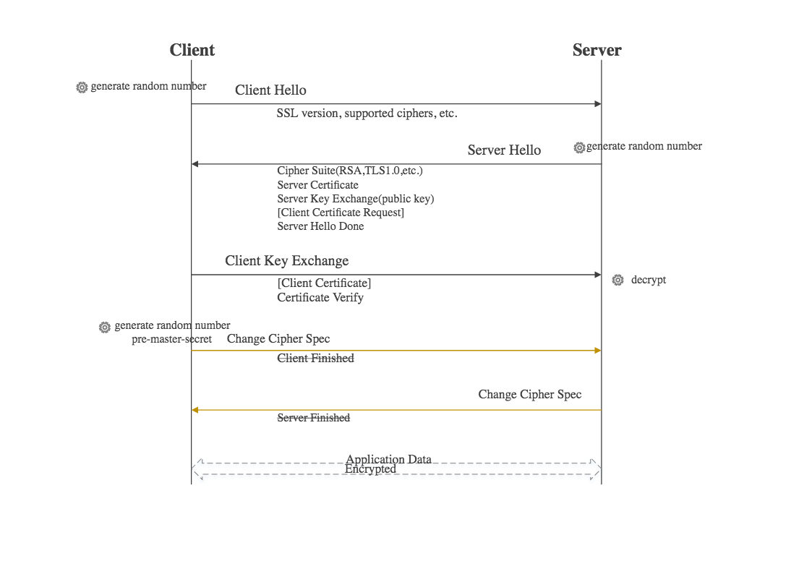

http 相关知识
本文于 831 天之前发表，文中内容可能已经过时。
HTTP报文格式
由三个部分组成，分别是：
- 状态行
- 消息报头
- 正文
如下所示，HTTP响应的格式与请求的格式十分类似：
1 | 请求报文： |
头部字段分为请求头部字段，响应头部字段和通用头部字段三种类型，
请求报文头部字段有Accept、From 等等，
响应报文有 Content-Length 等，
通用有Cache-Control，Content-Type,Date等get和post区别？
两者没有本质区别，相比之下，get请求报文在startLine的url里面会直接带上query参数，post请求报文则不会带上，query参数会放在body里面。不过这些也都是通用的做法，在get请求报文的body里面带上query参数可能不会被大多数的服务器解析.
get格式:
1
2
3
4
5
6
7
8
9
GET /sn/index.php?sn=123&n=asa HTTP/1.1
Accept: */*
Accept-Language: zh-cn
host: localhost
Content-Type: application/x-www-form-urlencoded
Content-Length: 12
Connection:close
post格式：
1
2
3
4
5
6
7
8
9
10
POST /sn/index.php HTTP/1.1
Accept: */*
Accept-Language: zh-cn
host: localhost
Content-Type: application/x-www-form-urlencoded
Content-Length: 12
Connection:close
sn=123&n=asa
响应码分类
响应码由三位十进制数字组成，它们出现在由HTTP服务器发送的响应的第一行。 响应码分五种类型，由它们的第一位数字表示：
- 1xx：信息，请求收到，继续处理
- 2xx：成功，行为被成功地接受、理解和采纳
- 3xx：重定向，为了完成请求，必须进一步执行的动作
- 4xx：客户端错误，请求包含语法错误或者请求无法实现
- 5xx：服务器错误，服务器不能实现一种明显无效的请求
常见的响应码如下：
- 200：请求成功，请求内容与该响应一起返回
- 202：请求已被接受，但还没处理。
- 301：请求的资源已被永久移动到新的位置。
- 302：请求的资源被临时移动到新的位置。
- 400：请求参数有误，当前请求无法被服务器理解。
- 401：请求需要验证用户
- 403：不允许访问该地址
- 404：Not Found
- 408：请求超时
- 500：服务器内部错误
- 502：Bad Gateway网关出错
HTTP和HTTPS
- HTTP 标准端口是 80 ，而 HTTPS 的标准端口是 443
HTTPS 协议提供了三个强大的功能：
- 内容加密。浏览器到百度服务器的内容都是以加密形式传输，中间者无法直接查看原始内容。
- 身份认证。保证用户访问的是百度服务，即使被 DNS 劫持到了第三方站点，也会提醒用户没有访问百度服务，有可能被劫持
- 数据完整性。防止内容被第三方冒充或者篡改。
HTTP和HTTP1.1
Http1.1比Http1.0多了以下优点：
- 支持持久连接，在一个TCP连接上可以传送多个HTTP请求和响应，减少了建立和关闭连接的消耗和延迟
- 多个请求和响应可以重叠，多个请求和响应可以同时进行.
- 更加多的请求头和响应头(比如身份认证、状态管理和Cache缓存等机制相关的请求头和响应头).
Http2.0
Http1.1主要针对的是tcp连接中握手和挥手导致的时延。而Http2.0主要针对的是tcp连接中慢启动导致的时延，同时也改进了串行执行的问题。
Http2的主要特点：
新的二进制格式（Binary Format），HTTP1.x的解析是基于文本。基于文本协议的格式解析存在天然缺陷，文本的表现形式有多样性，要做到健壮性考虑的场景必然很多，二进制则不同，只认0和1的组合。基于这种考虑HTTP2.0的协议解析决定采用二进制格式，实现方便且健壮。
多路复用（MultiPlexing），即连接共享，即每一个request都是是用作连接共享机制的。一个request对应一个id，这样一个连接上可以有多个request，每个连接的request可以随机的混杂在一起，接收方可以根据request的 id将request再归属到各自不同的服务端请求里面。
header压缩，如上文中所言，对前面提到过HTTP1.x的header带有大量信息，而且每次都要重复发送，HTTP2.0使用encoder来减少需要传输的header大小，通讯双方各自cache一份header fields表，既避免了重复header的传输，又减小了需要传输的大小。
服务端推送（server push），同SPDY一样，HTTP2.0也具有server push功能（假如你请求index.html，会把它需要的main.js也推送过来，这样就不用再去请求main.js）。
HTTP2.0的多路复用和HTTP1.X中的长连接复用有什么区别？
HTTP/1.0 一次请求-响应，建立一个连接，用完关闭；每一个请求都要建立一个连接；
HTTP/1.1 Pipeling解决方式为，若干个请求排队串行化单线程处理，后面的请求等待前面请求的返回才能获得执行机会，一旦有某请求超时等，后续请求只能被阻塞，毫无办法，也就是人们常说的线头阻塞；
在网页请求中这样似乎很常见，但是在移动端的编程中并没有用到，如果这样阻塞对移动端的影响还是挺大的，比如请求一个图片，后面再一个普通json请求，如果json请求需要等待图片io结束才能进行，那app早就被人卸载了。。。okhttp中采用的是连接建立之后会缓存一段时间这种方式来避免重复的握手和挥手，请求发送前会检查是不是有可以重用的连接。
HTTP/2多个请求可同时在一个连接上并行执行。某个请求任务耗时严重，不会影响到其它连接的正常执行；
具体如图：

三次握手和四次挥手
三次握手
三次握手过程示意图如下：

三次握手过程
第一步:
客户机的TCP首先向服务器得TCP发送一个连接请求报文段。这个特殊的报文段中不含应用层数据，其首部中的SYN标志位被设置为1。另外，客户机会随机选择一个起始序号seq=x。（连接请求报文不携带数据，但要消耗一个序号）
第二步:
服务器得TCP收到请求连接报文段后，如果同意建立连接，就向客户机发回确认，并为该TCP连接分配TCP缓存和变量。在确认报文段中，SYN和ACK位都被置为1，确认号字段的值为x+1，并且服务器随机产生起始序号seq=y（确认报文不携带数据，但也要消耗掉一个序号）。
第三步：
当客户机收到确认报文段后，还要向服务器给出确认，并且也要给该连接分配缓存和变量。这个报文段的ACK标志位被置为1，序号字段为x+1，确认号字段ack=y+1。该报文段可以携带数据，不过不携带数据则不消耗序号。
成功进行以上三步之后，TCP连接就建立了，接下来就可以传送应用层数据了，TCP提供的是全双工通信，因此通信双方的应用进程在任何时候都能发送数据。
上述TCP连接建立过程可总结如下：
1
2
3
4
51. SYN=1,seq=x
2. SYN=1,ACK=1,seq=y,ack=x+1
3. ACK=1,seq=x+1,ack=y+1
为什么建立连接需要3次握手
如果采用两次的话，会出现下面这种情况：
TCP的三次握手最主要是防止已过期的连接再次传到被连接的主机。
比如是客户端要连到服务器，结果发送的连接信息由于某种原因没有到达服务器；于是，客户端又发了一 次，结果这次服务器收到了，于是就发信息回来，两机就连接。传完东西后，断开。结果这时候，原先没有到达的连接信息突然又传到了服务器，于是服务器发确认信息给客户端，然后服务器就以为和客户端连上了，这个时候服务器就在等待客户端传东西过去。
三次握手改成仅需要两次握手，死锁是可能发生
考虑客户机和服务器之间的通信，假定客户机向服务器发送连接请求，服务器收到这个分组后，回复确认分组。按照两次握手的协定，服务器认为连接已经成功建立了，可以开始发送数据分组。
可是，可能出现一种情况就是，服务器的确认分组在传输过程中被丢失，而此时客户端没有收到确认分组；客户端此时不知道服务器是否已经准备好，不知道服务器建议什么样的序列号，客户端甚至怀疑服务器是否收到了自己的连接请求分组。
在这种情况下，客户端认为连接还未建立成功，将忽略服务器发来的任何数据分组，只等待连接确认应答分组。而服务器发出的分组超时后，重复发同样的分组，这样就形成了死锁。
简单描述：
客户端 ： 我要建立连接
服务端 ： 我OK了，缓存已经分配，连接号给你。
客户端 ： 我知道你ok了，我也开始把
四次挥手
四次挥手如下图所示：

看起来四次挥手好像很复杂，其实很简单。无非就是客户端和服务器端各自提出关闭，值得注意的是TIME-WAIT，后面小结详细说。
四次挥手过程
第一步：
客户机打算关闭连接，就向其TCP发送一个连接释放报文段，并停止再发送数据，主动关闭TCP连接，该报文的的FIN标志位被置1，seq=u，它等于前面已传送过的数据的最后一个字节序号+1（FIN报文段即使不携带数据，也要消耗一个序号），TCP是全双工的，即可以想象成一条TCP连接上有两条数据通路。当发送FIN报文时，发送FIN的一端就不能再发送数据，也就是关闭了其中一条数据通路，但对方还可以发送数据。
第二步：
服务器收到连接释放报文段后即发出确认，确认号是ack=u+1，而这个报文段自己的序号是v，等于它前面已经传送过的数据的最后一个自己的序号+1。此时，从客户机到服务器这个方向的连接就释放了，TCP连接处于半关闭状态。但服务器若发送数据，客户机仍要接收，即从服务器到客户机这个方向的连接并未关闭。
第三步：
若服务器已经没有要向客户机发送的数据，就通知TCP释放连接，此时其发出FIN=1的连接释放报文段。
第四步：
客户机收到连接释放报文段后，必须发出确认。在确认报文段中，ACK字段被置为1，确认号ack=w+1，序号seq=u+1。此时TCP连接还没有释放掉，必须经过时间等待计时器设置的时间2MSL后，A才进入连接关闭状态。
上述TCP连接释放过程可总结如下：
1
2
3
4
5
6
71. FIN=1,seq=u
2. ACK=1,seq=v,ack=u+1
3. FIN=1,ACK=1,seq=w,ack=u+1
4. ACK=1,seq=u+1,ack=w+1TIME-WAIT作用
为什么需要TIME_WAIT？有如下几个原因：
因为在第四步的时候，客户机发送的ACK可能丢失并导致服务端重新发送FIN消息，TIME_WAIT维护连接状态.
如果执行主动关闭的一方客户机不进入到TIME_WAIT状态就关闭连接那会发生什么呢？当重传的FIN消息到达时，因为TCP已经不再有连接的信息了，所以就用RST(重新启动)消息应答，导致服务端进入错误的状态而不是有序终止状态，如果发送最后ACK消息的一方处于TIME_WAIT状态并仍然记录着连接的信息，它就可以正确的响应对等方服务端的FIN消息了.
TIME_WAIT为连接中”离群的段”提供从网络中消失的时间.
考虑一下，如果延迟或者重传段在连接关闭后到达时会发生什么呢？通常情况下，因为TCP仅仅丢弃该数据并响应RST消息，所以这不会造成任何问题。当RST消息到达发出延时段的主机时，因为该主机也没有记录连接的任何信息，所以它也丢弃该段。然而，如果两个相同主机之间又建立了一个具有相同端口号的新连接，那么离群的段就可能被看成是新连接的，如果离群的段中数据的任何序列号恰恰在新连接的当前接收窗口中，数据就会被重新接收，其结果就是破坏新连接。
简单描述：
客户端 ： 我传完了，可以关闭了
服务端 ： 我知道了，这边可能还有点东西没传完
服务端 ： 我也传完了
客户端 ： 我知道了，2MSL后我也关闭
服务端 ：收到确认后关闭连接
tcp报文和 udp报文
TCP报文段首部

UDP数据报格式

TCP的拥塞控制

- 拥塞的标志 ：
- 重传计时器超时
- 接收到三个重复确认
- 慢开始
- 慢开始不是指cwnd的增长速度慢（指数增长），而是指TCP开始发送设置cwnd=1。
- 思路：不要一开始就发送大量的数据，先探测一下网络的拥塞程度，也就是说由小到大逐渐增加拥塞窗口的大小。
- 拥塞避免（按线性规律增长）
- 拥塞避免并非完全能够避免拥塞，是说在拥塞避免阶段将拥塞窗口控制为按线性规律增长，使网络比较不容易出现拥塞。
- 思路：让拥塞窗口cwnd缓慢地增大，即每经过一个往返时间RTT就把发送方的拥塞控制窗口加一。
- 快速重传和快速恢复
代理：
https://blog.csdn.net/watson2017/article/details/79897693
Https
其实https的关键在于非对称加解密算法，有了这个算法作为基础，后面才能有这么多验证过程
数字签名
将报文按双方约定的摘要算法Hash后得到的一个固定位数的报文摘要，再使用CA机构的公钥加密得到数字签名。
在这里报文包含：
- 你提交给CA的公钥
- 你提交给CA的标识信息（网址，邮件等）
- 有效期（证书的有效时间）
- CA机构的标识信息
在数学上保证：只要改动报文中任何一位，重新计算出来的报文摘要值就会与原先的值不相符。这就保证了报文的不可更改性。
证书
证书需要申请，并由专门的数字证书认证机构 CA 通过非常严格的审核之后颁发的电子证书，证书是对服务器端的一种认证。
证书的内容：
- 你提交给CA的公钥
- 你提交给CA的标识信息（网址，邮件等）
- 有效期（证书的有效时间）
- CA机构的标识信息
- 摘要算法（md5,sha1,sha256等等）
- 颁发者的数字签名，用来证明使用者的公钥和使用者的标识符信息之间的绑定的有效性。
客户端收到证书以后，用CA的的公钥解密数字签名，得到报文摘要A，解密成功说明这个证书确实是由这个CA颁发的。
拿1234按照5去hash，得到报文摘要B，再，对比A和B是否相同，相同则说明报文信息没有被篡改。
CA的公钥是存在客户端本地的，CA机构和它们的公钥都是已知的保证权威的。
PRF
PRF是一个“伪随机数函数”，这个函数很聪明，在规约中也有定义。它使用基于哈希的消息验证码（HMAC）的MD5和SHA-1两种哈希函数将密钥，ASCII字符以及我们给的种子结合起来。对每个哈希函数发送一半的输入。说它聪明的原因是即使面对MD5和SHA-1的弱点，它的防攻击能力还很强。这个过程可以自我反馈并不停地循环，而且我们要多少字节就能生成多少。
https的过程

- 客户端向服务端发起请求，并且带上自己支持的加密算法（ Cipher Suites），ssl版本，摘要算法等等，产生一个随机数A（Client random）。
- 服务端把自己的证书返回给客户端，并且带上选择的加密算法，摘要算法等等，产生一个随机数B（Server random）。
- 客户端验证这个证书，通过后再生成一个随机数C（Pre-master secret），客户端会使用这三个随机数ABC使用PRF生成一个master_secret，然后再使用 master_secret和随机数AB再PRF一次得到加密套件key block，里面包含后面通信会用到的各种密钥。然后使用证书中的公钥加密C，发送给服务器端，并且发送change_cipher_spec协议通知服务器，客户端已经准备好。
- 服务器端用私钥解密C，用同样的方式生成master_secret和加密套件key block，然后发送change_cipher_spec协议通知客户端，服务器已经准备好
感谢